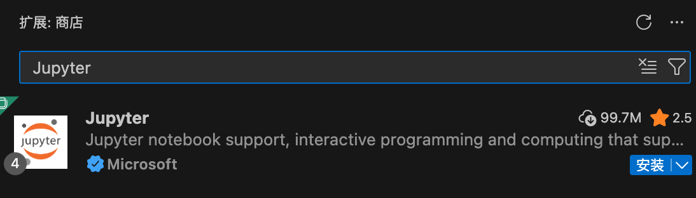
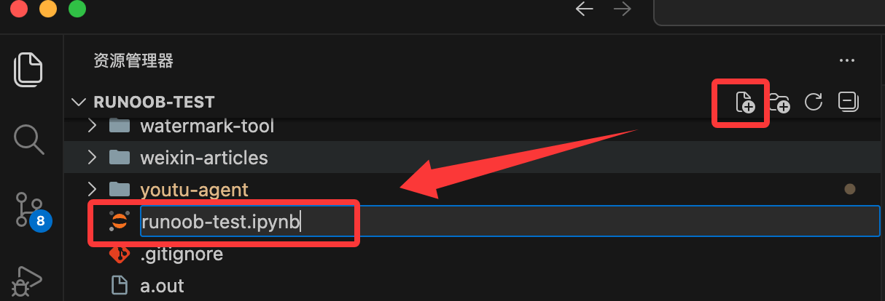
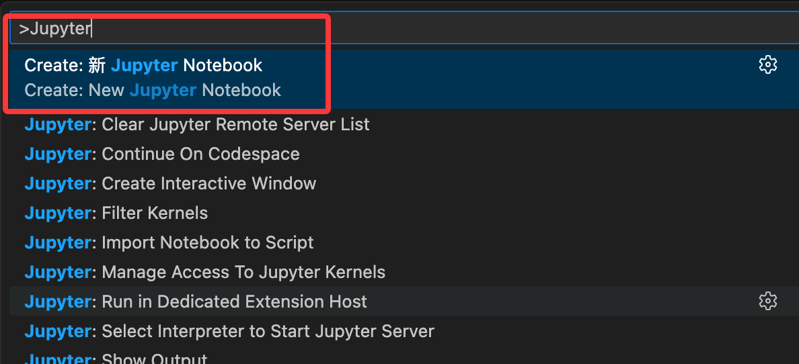
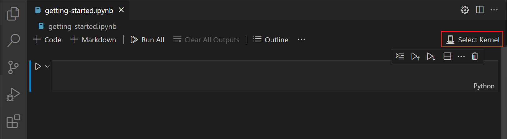
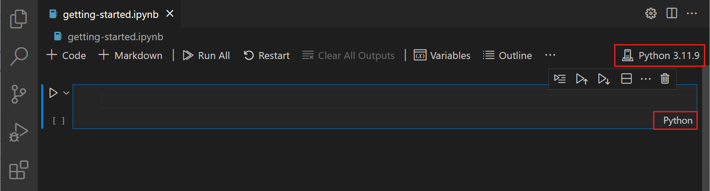
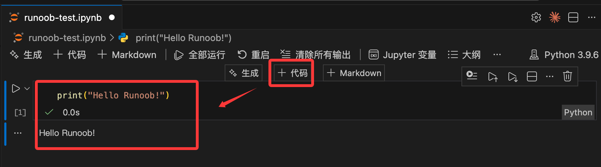
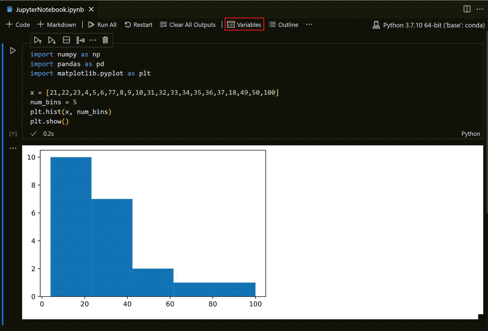
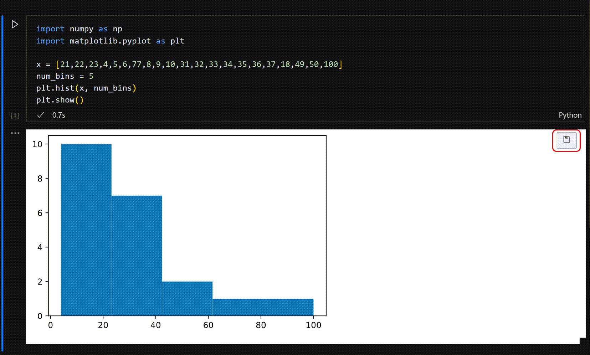
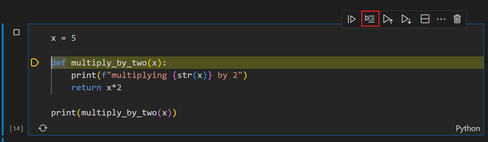
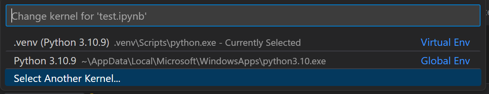

VS Code で Jupyter Notebook を使用する
VS Code（正式名称 Visual Studio Code）は、Microsoft が提供する無料・オープンソース・クロスプラットフォームのコードエディターです。VS Code では拡張機能をインストールして Jupyter Notebook を使用できます。VS Code の強力なコード補完機能と Jupyter の対話的な体験を完璧に組み合わせられます。
VS Code をまだインストールしていない場合は、その公式サイトからダウンロードしてインストールしてください。インストールプロセスは非常に簡単で、「次へ」をクリックしていくだけです。
VS Code について知らない場合は、私たちのVSCode チュートリアル。
VS Code を開き、左側のアクティビティバーの Extensions（拡張機能）アイコン（ショートカットキー: Ctrl+Shift+X）をクリックし、「Jupyter」拡張機能（Microsoft 提供）を検索してインストールします。この拡張機能をインストールすると、Python 拡張機能も自動的にインストールされます。

コア機能と操作ガイド
最初の Jupyter Notebook を作成する
それでは、新しい Jupyter Notebook ファイル (.ipynb) を作成しましょう。
新しいファイルの作成：末尾が .ipynb のファイルを直接作成するだけで OK です。

コマンドパレットから作成することもできます：
- VS Code では、
Ctrl+Shift+Pを押して、コマンドパレット（これは万能の検索ボックスです）を開きます。 - 入力して、
Jupyter: Create New Jupyter Notebookそれを選択します。 - VS Code は自動的に、
Untitled-1.ipynbという名前の新しいファイルを作成し、ノートブックインターフェースで開きます。最初のセルがすでに準備されているのがわかります。

実行環境（Kernel）の設定
コードを実行する前に、どの Python インタープリターを使用するかを VS Code に指定する必要があります：
- 編集画面の右上にある「Select Kernel」（カーネルの選択）をクリックします。

- 表示されたリストから、インストール済みの Python バージョンまたは Anaconda 環境（例：Python 3.x.x や base (conda)）を選択します。

- 注意：初めて実行する場合、VS Code が ipykernel パッケージのインストールを促すことがあります。「インストール」をクリックするだけです。
その後、コードを書いて実行できるようになります：

セルの実行と管理
コードセルの実行
- 単一セルの実行：セルの左側にある再生アイコン（▶）をクリックします。。
- ショートカットキーの操作：
Ctrl + Enter：現在のセルを実行します。Shift + Enter：現在のセルを実行し、移動/選択下のセル。Alt + Enter：現在のセルを実行し、下に新しいセルを挿入します。

- 複数セルの実行：上部ツールバーの「二重矢印」アイコンを使ってRun All全体を実行します。または、特定のセルで選択します：Run Above（上のすべてを実行）またはRun Below（下のすべてを実行）。
- セクションごとに実行：アウトライン（Outline）ビューで、セクション見出しの横にあるボタンをクリックすると、その Markdown 見出しの下にあるセルグループ全体を実行できます。

セルのモード
VS Code のセルには3つの状態があり、左側の垂直バーで示されます：
- 未選択：垂直バーなし。
- コマンドモード (Command Mode)：垂直バーが塗りつぶされ、このときキーボードコマンド（例：削除、コピー）を実行できます。
Enter編集モードに入る；Escコマンドモードに戻る。A上にセルを挿入；B下に挿入。D, D（2回押す）セルを削除；Z削除を元に戻す。
- 編集モード (Edit Mode)：垂直バーが塗りつぶされ、セルに枠線が付き、このときコードを入力できます。
形式の切り替え
- コマンドモードでは：[キー]を押すと
MMarkdown（ドキュメント）に切り替わります。[キー]を押すとYCode（コード）に切り替わります。
ファイル操作とナビゲーション
- 保存：
Ctrl + S。 - エクスポート：ツールバーの
...> Exportをクリックします。サポートされているエクスポート形式：.pyスクリプト、HTML、PDF（注：PDF のエクスポートには TeX 環境のインストールが必要です）。 - アウトラインナビゲーション：サイドバーのOutlineビューで素早く移動できます。デフォルトでは Markdown 見出しのみが表示されますが、設定で
Notebook > Outline: Show Code Cellsコードブロックの表示を有効にできます。 - 行番号の制御：コマンドモードで、
L[キー]を押すと単一セルの行番号を切り替え、Shift + L[キー]を押すと全体の行番号を切り替えます。

データサイエンス拡張ツール
変数エクスプローラーとデータビューアー
ツールバーのVariablesアイコンをクリックすると、下部に変数パネルを開けます。
- 詳細の表示：変数をダブルクリックするか、横のアイコンをクリックすると、Data Viewerデータビューアーに入れます。
- データのフィルタリング：列上部のテキストボックスに入力すると検索できます；
=完全一致マッチングが可能です。正規表現フィルターにも対応しています。


プロットの保存
生成されたグラフ（matplotlib の出力など）にマウスを重ね、右上のSaveアイコンをクリックすると画像として保存できます。

デバッグと上級
デバッグ機能 (Debug)
- 行単位の実行 (Run by Line)：セルのツールバーのアイコンをクリックすると、邪魔されずにコードを1行ずつ実行できます。

- フルデバッグ：セルの左側にブレークポイントを設定し、
Runボタンの横にあるDebug Cell。
リモート接続
リモートサーバーの計算能力を使用する必要がある場合：
- 右上のKernel Pickerカーネルセレクターをクリックします。

- 選択Existing Jupyter Server。

- を含む
?token=サーバー URL を入力して接続できます。
差分比較 (Diff)
なぜなら.ipynb本質は JSON であり、VS Code は視覚的な差分比較ツールを提供しています。入力、出力、メタデータの具体的な変更を明確に確認でき、複雑な生のコードを読む必要はありません。